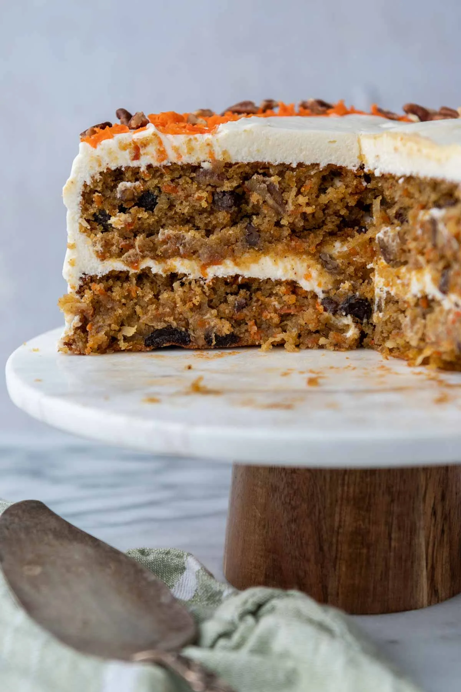

Surprise Carrot Cake

This Carrot Cake is a delicacy among my family, it is super moist and delicious.
Ingredients:
- 2 1/4 cups Softasilk Cake Flour
- 1 1/2 cups sugar
- 2 teaspoons baking soda
- 2 teaspoons ground cinnamon
- 1/2 teaspoon salt
- 1/2 teaspoon ground allspice or ground ginger
- 3/4 cup mayonnaise
- 3 large eggs
- 1 (8 ounce) can crushed pineapple in juice, undrained
- 2 cups finely shredded carrots (4 medium)
- 3/4 cup chopped pecans
- Cream Cheese Frosting (recipe follows)
- Heat oven to 350 degrees F. Spray two 9-inch round cake pans generously wilth no-stick spray with flour.
- Comblne cake flour, sugar, baking soda, cinnamon, salt and allspice in a medium bowl.
- In a large bowl, combine mayonnaise, eggs and crushed pineapple with juice.
Add flour mixture; beat with electric mixer on low speed for 30 seconds.
Beat on medium speed for 3 minutes, scraping bowl occasionally.
- Stir in carrots and pecans. Pour batter into prepared pans.
- Bake 28 to 32 minutes or until toothpick inserted In center comes out clean.
Cool 10 minutes; remove from pans to wire rack. Cool completely.
- Place one cake layer top-side down on serving plate. Spread with frosting.
Top with remaining cake layer, topside up, Spread sides and top of cake with remaining frosting